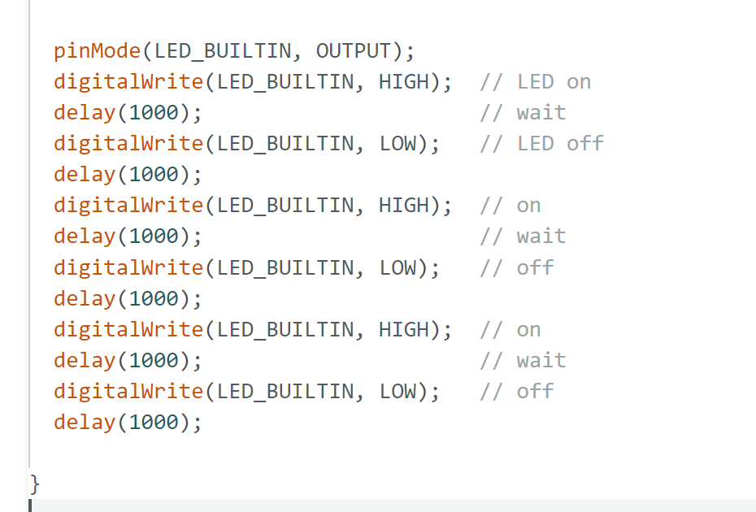
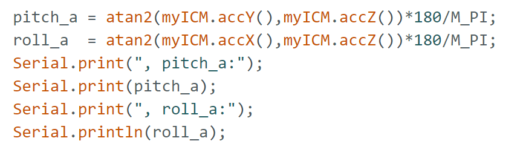
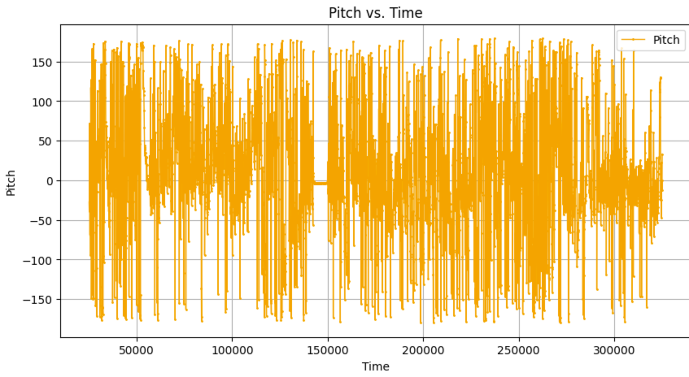
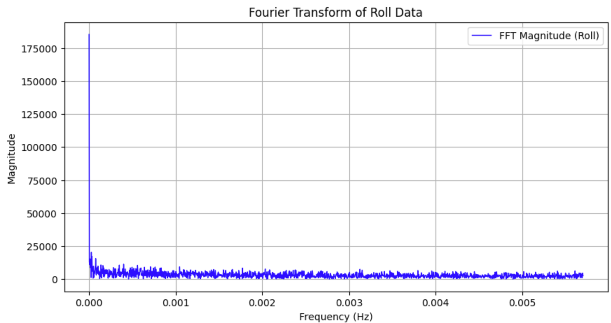
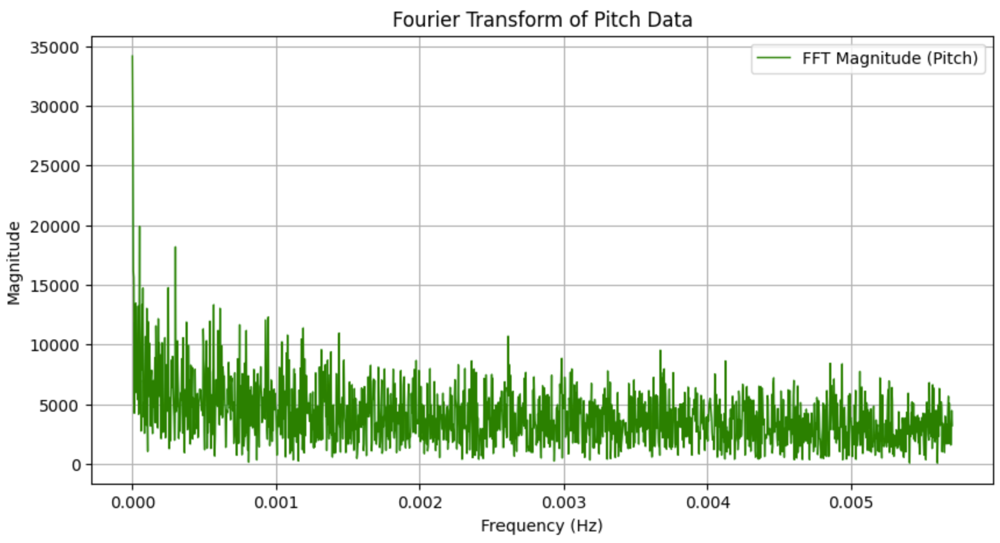
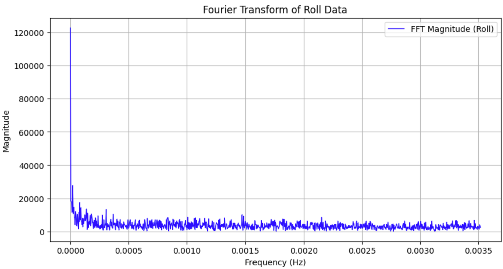
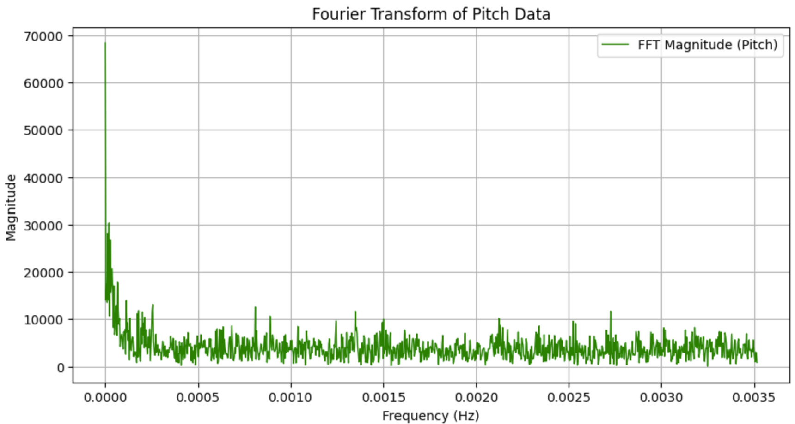
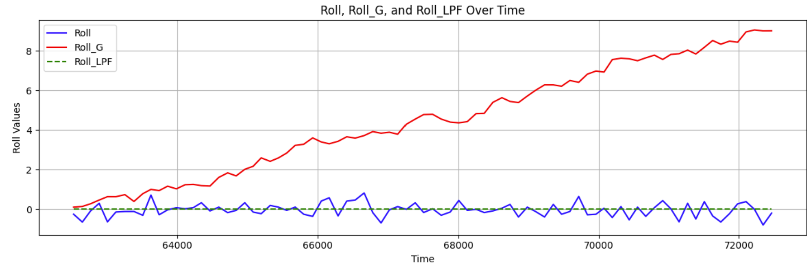
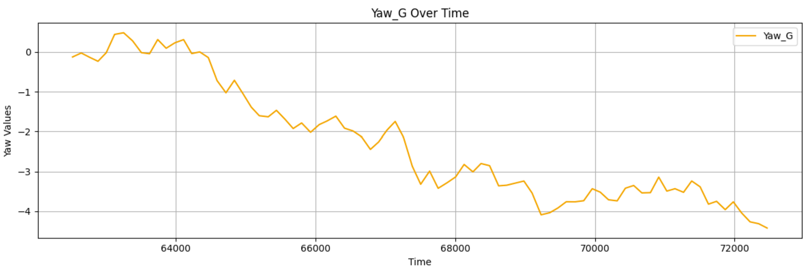
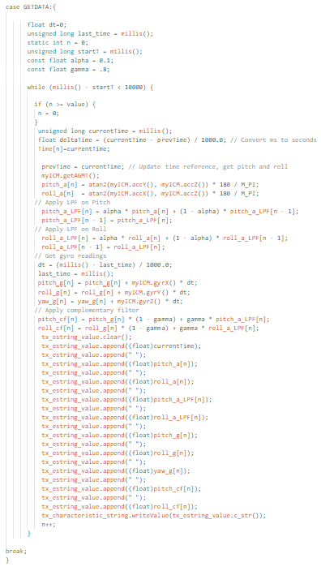

IMU Lab Report
Objective
This lab focuses on setting up and analyzing IMU data from the SparkFun Artemis board.
IMU Setup
IMU Connection
To set up the IMU, I plugged it into the Artemis and then ran the example code provided to ensure it was working as intended.
Hardware Connection:

AD0_VAL Definition
In the example code, AD0_VAL is assigned a value of 1, signifying that the ADR jumper on the IMU has not been bridged. This setting designates the IMU’s address as 0x69, making SPI communication possible. If the jumper were soldered, SPI communication would be disabled.
IMU Basic Testing & Observations
Using the example code, I tested the IMU by applying different types of movement. When the IMU accelerates in a particular direction, only the corresponding accelerometer values change, while the gyroscope shows minimal variation. During rotation, the accelerometer readings fluctuate continuously, whereas the gyroscope detects changes only while the motion is happening. When flipped, the accelerometer readings adjust as different axes align with gravity. Once the IMU remains at a fixed angle, the gyroscope records small values since it measures angular velocity rather than absolute position. The video below illustrates these behaviors as the IMU is flipped, rotated, and accelerated.
LED Startup Indicator
I added code to make the Artemis blue light blink, indicating that the IMU is properly connected.
Blink Code:
Accelerometer
Pitch & Roll Equations
Pitch & Roll at -90°, 0°, 90°
Readings seen in video:
Accelerometer Accuracy
The accelerometer accuracy seems to be alright if it is held steady at an angle. Even then, the sensor readings will keep changing. A fourier transform will assist with filtering out the noise from the sensor readings.
Fourier Transform Analysis
I sent data from arduino to python, and then did a fourier transform to better see what area of signal the noise was located. The graph of my fourier transform lead me to select a cutoff frequency of 5 hertz, as below this level is where the noise is. Here are graphs of my raw data of pitch and roll vs time along with the FFT plots. Note: the Frequency axis here should be scaled by 10,000.
Raw Roll:

Raw Pitch:
FFT Roll:
FFT Pitch:
Low-Pass Filter Implementation
I implemented a low pass filter to clean the noise out of the raw pich and roll data. I used .1 as my alpha, which is calculate from dt = 1/(sampling rate), RC = 1/(2*pi*cutoff freq), and alpha=dt/(dt+RC) using a sampling rate of about 270 message/min and a cutoff frequency of 5 Hz. Note: the Frequency axis here should be scaled by 10,000.
LPF Code:

LPF Roll:

LPF Pitch:

LPF Roll:
LPF Pitch:
Gyroscope
Pitch, Roll, and Yaw Computation
Gyroscope Code:

Gyroscope readings vs. Accelerometer:
Pitch:

Roll:
Yaw:
Discussion
The data indicates that the gyroscope exhibits significantly less noise than the accelerometer, but tends to drift over time. The accelerometer provides more accurate readings when the IMU remains in a fixed position. Increasing the sampling frequency enhances the gyroscope’s accuracy by allowing for more frequent updates. To achieve a more reliable signal, I implemented a complementary filter that combines both accelerometer and gyroscope measurements using weighting factor of 0.8 to give more emphasis to the accelerometer's readings, as they proved to be more accurate. The filter removes noise and drift from the input signal.
Complementary Filter
CF Code:

CF Pitch:

CF Roll:

Sample Data
IMU Sampling Speed: I rewrote my main Arduin loop, removing all prints and built-in delays. The resulting Arduino loop runs faster (362Hz) than the IMU can process data (48Mhz). Each data set (time, raw roll & pitch, filtered roll & pitch, guroscope readings, and the combined signals) are stored in their own individual arrays for easy access later.
Final Loop Code, storing data in arrays:
Bluetooth Data Transmission
The Artemis has 384 kiB of memory. My loop had 10 arrays to communicate all the data types from this lab. This number can be reduced depending on the desired data being transfered. With 10 arrays and 4 bits per float in the array, each array can store up to 9600 elements in each array. Since the IMU processes data at 362hz, the Artemis can store about 26.5 seconds of IMU data if stored in 10 separate float arrays.
5 seconds of data
153432.000 -70.000 -75.000 -12.000 -46.000 0.000 0.000 0.000 -9.000 -36.000
153435.000 -70.000 -75.000 -17.000 -48.000 0.000 0.000 0.000 -13.000 -38.000
153443.000 -69.000 -75.000 -22.000 -50.000 0.000 0.000 0.000 -17.000 -40.000
153445.000 -69.000 -75.000 -26.000 -52.000 0.000 0.000 0.000 -20.000 -41.000
153491.000 -68.000 -74.000 -30.000 -54.000 0.000 2.000 0.000 -24.000 -42.000
153555.000 -67.000 -73.000 -33.000 -55.000 0.000 3.000 0.000 -26.000 -43.000
153558.000 -65.000 -72.000 -36.000 -56.000 0.000 0.000 0.000 -28.000 -44.000
153618.000 -66.000 -72.000 -38.000 -57.000 0.000 1.000 0.000 -30.000 -45.000
153677.000 -66.000 -73.000 -40.000 -58.000 0.000 0.000 0.000 -32.000 -46.000
153736.000 -66.000 -73.000 -42.000 -59.000 0.000 -2.000 0.000 -33.000 -47.000
153795.000 -67.000 -73.000 -44.000 -60.000 0.000 -2.000 0.000 -35.000 -48.000
153854.000 -69.000 -75.000 -46.000 -61.000 0.000 -1.000 0.000 -36.000 -49.000
153980.000 -67.000 -73.000 -48.000 -62.000 1.000 4.000 0.000 -38.000 -48.000
154039.000 -66.000 -73.000 -49.000 -63.000 0.000 2.000 0.000 -39.000 -50.000
154098.000 -66.000 -73.000 -50.000 -63.000 0.000 1.000 0.000 -40.000 -50.000
154160.000 -65.000 -72.000 -51.000 -63.000 0.000 0.000 0.000 -40.000 -50.000
154221.000 -66.000 -73.000 -52.000 -63.000 0.000 -1.000 0.000 -41.000 -50.000
154274.000 -69.000 -75.000 -53.000 -64.000 0.000 -1.000 0.000 -42.000 -51.000
154340.000 -70.000 -75.000 -54.000 -65.000 0.000 -1.000 -1.000 -43.000 -52.000
154393.000 -69.000 -75.000 -55.000 -66.000 0.000 0.000 0.000 -44.000 -52.000
154453.000 -67.000 -74.000 -56.000 -66.000 0.000 1.000 0.000 -44.000 -52.000
154520.000 -66.000 -73.000 -56.000 -66.000 0.000 2.000 0.000 -44.000 -52.000
154581.000 -67.000 -73.000 -57.000 -66.000 0.000 1.000 0.000 -45.000 -52.000
154635.000 -65.000 -72.000 -57.000 -66.000 0.000 0.000 0.000 -45.000 -52.000
154698.000 -66.000 -72.000 -57.000 -66.000 0.000 0.000 0.000 -45.000 -52.000
154753.000 -68.000 -74.000 -58.000 -66.000 0.000 -1.000 0.000 -46.000 -53.000
154817.000 -68.000 -74.000 -58.000 -66.000 0.000 -1.000 -1.000 -46.000 -53.000
154876.000 -68.000 -75.000 -58.000 -66.000 0.000 0.000 -1.000 -46.000 -52.000
154937.000 22.000 21.000 -49.000 -57.000 15.000 1.000 -15.000 -36.000 -45.000
154994.000 -61.000 -57.000 -50.000 -57.000 -5.000 -14.000 14.000 -41.000 -48.000
155058.000 -24.000 -69.000 -47.000 -58.000 -16.000 -16.000 16.000 -40.000 -49.000
155117.000 -126.000 -102.000 -54.000 -62.000 -14.000 -14.000 10.000 -46.000 -52.000
155176.000 -112.000 -93.000 -59.000 -65.000 14.000 14.000 -1.000 -44.000 -49.000
155241.000 -11.000 -45.000 -54.000 -63.000 13.000 0.000 -10.000 -40.000 -50.000
155411.000 113.000 -93.000 -37.000 -66.000 -37.000 -42.000 42.000 -37.000 -61.000
155534.000 -128.000 -144.000 -46.000 -73.000 -30.000 -30.000 30.000 -42.000 -64.000
155596.000 118.000 -111.000 -29.000 -76.000 -2.000 -15.000 -15.000 -23.000 -63.000
155656.000 -155.000 -103.000 -41.000 -78.000 3.000 9.000 -8.000 -32.000 -60.000
155718.000 -63.000 -47.000 -43.000 -74.000 3.000 10.000 15.000 -33.000 -57.000
155777.000 -71.000 -73.000 -45.000 -73.000 -10.000 9.000 1.000 -38.000 -56.000
155838.000 -166.000 -107.000 -57.000 -76.000 0.000 -8.000 -15.000 -45.000 -62.000
155898.000 -154.000 -114.000 -66.000 -79.000 11.000 6.000 -12.000 -50.000 -62.000
155954.000 -47.000 -8.000 -64.000 -71.000 11.000 12.000 10.000 -49.000 -54.000
156016.000 -51.000 -58.000 -62.000 -69.000 0.000 -15.000 -2.000 -49.000 -58.000
156081.000 -116.000 -108.000 -67.000 -72.000 16.000 3.000 -16.000 -50.000 -57.000
156136.000 -54.000 -80.000 -65.000 -72.000 -14.000 -3.000 5.000 -54.000 -58.000
156199.000 -58.000 -77.000 -64.000 -72.000 15.000 15.000 -15.000 -48.000 -54.000
156319.000 -60.000 -77.000 -63.000 -72.000 -18.000 -29.000 29.000 -54.000 -63.000
156374.000 -20.000 -77.000 -58.000 -72.000 -13.000 -13.000 13.000 -49.000 -60.000
156437.000 -60.000 -83.000 -58.000 -73.000 16.000 16.000 -16.000 -43.000 -55.000
156497.000 18.000 -57.000 -50.000 -71.000 -14.000 14.000 -4.000 -42.000 -54.000
156557.000 -15.000 -58.000 -46.000 -69.000 -15.000 -15.000 15.000 -39.000 -58.000
156617.000 -69.000 -50.000 -48.000 -67.000 15.000 -5.000 -1.000 -35.000 -54.000
156678.000 -82.000 -87.000 -51.000 -69.000 -15.000 11.000 -4.000 -43.000 -53.000
156738.000 38.000 -60.000 -42.000 -68.000 -15.000 -15.000 15.000 -36.000 -57.000
156800.000 -79.000 -79.000 -45.000 -69.000 15.000 -15.000 15.000 -33.000 -58.000
156857.000 -101.000 -115.000 -50.000 -73.000 -14.000 14.000 -14.000 -42.000 -55.000
156916.000 -56.000 -77.000 -50.000 -73.000 -14.000 14.000 -14.000 -42.000 -55.000
156976.000 81.000 -81.000 -36.000 -73.000 14.000 6.000 2.000 -26.000 -57.000
157039.000 13.000 -72.000 -31.000 -72.000 15.000 11.000 15.000 -21.000 -55.000
157217.000 57.000 -57.000 -22.000 -70.000 -44.000 -44.000 44.000 -26.000 -64.000
157275.000 -68.000 -77.000 -26.000 -70.000 -5.000 -7.000 14.000 -21.000 -57.000
157336.000 -113.000 147.000 -34.000 -48.000 -15.000 8.000 -15.000 -30.000 -36.000
157395.000 -44.000 -72.000 -35.000 -50.000 7.000 14.000 -14.000 -26.000 -37.000
157458.000 46.000 -57.000 -26.000 -50.000 -16.000 16.000 16.000 -24.000 -36.000
157520.000 -151.000 143.000 -38.000 -30.000 15.000 14.000 0.000 -27.000 -21.000
157580.000 -68.000 -77.000 -41.000 -34.000 15.000 15.000 -15.000 -29.000 -24.000
157635.000 -48.000 -77.000 -41.000 -38.000 -13.000 10.000 -13.000 -35.000 -28.000
157693.000 -41.000 -73.000 -40.000 -41.000 14.000 14.000 -14.000 -29.000 -30.000
157757.000 -40.000 -75.000 -40.000 -44.000 -15.000 11.000 -16.000 -35.000 -33.000
157820.000 -20.000 -65.000 -38.000 -46.000 15.000 15.000 -15.000 -27.000 -33.000
157873.000 0.000 -58.000 -34.000 -47.000 -11.000 -9.000 13.000 -29.000 -39.000
157936.000 -46.000 -76.000 -35.000 -49.000 -1.000 -13.000 16.000 -28.000 -41.000
157998.000 -54.000 -77.000 -36.000 -51.000 15.000 -6.000 15.000 -25.000 -42.000
158057.000 -59.000 -76.000 -38.000 -53.000 5.000 -5.000 14.000 -29.000 -43.000
158112.000 -64.000 -74.000 -40.000 -55.000 -3.000 0.000 6.000 -32.000 -44.000
158176.000 -58.000 -73.000 -41.000 -56.000 -2.000 9.000 -14.000 -33.000 -43.000
158239.000 -48.000 -75.000 -41.000 -57.000 -5.000 13.000 -16.000 -33.000 -43.000
158293.000 -48.000 -76.000 -41.000 -58.000 -3.000 12.000 -13.000 -33.000 -44.000
158354.000 -43.000 -73.000 -41.000 -59.000 8.000 8.000 -15.000 -31.000 -45.000
158420.000 -32.000 -69.000 -40.000 -60.000 2.000 -1.000 -6.000 -31.000 -48.000 Recording a Stunt
Car Setup
Include a video of your RC car experiment.